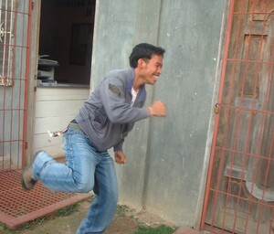
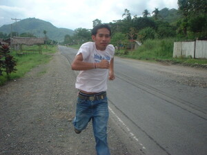

pallahuy  
/pallaguy/
v_rt.
“run”
vi.
for someone or something (egpallahuy, migpallahuy/inpallahuy, pallahuy, agent, eg><ø-) to run
Pallahuy ka.
You ran.
Egpallahuy ka batè.
The boy ran.
Genr. lungkesu
Eng. run; ran; sprint; flee; fled
Tag. tumakbó
Ceb. modagan
Ilo.: tumaráy
Tagbawa: palaguy
Tigwanon: palaguy
Binukid: pulaguy
Sarangani: lagoy
WBM: pelaǥuy
Ilianen: pelahuy
Dibabawon: laguy
Cagayano: laguy
Proto: (pa)laguy
OCM: Locomotion (481)
Online dict status: -
Usage level: F
vi.
for someone (egpalpallahuy, migpalpallahuy/inpalpallahuy, palpallahuy, agent, eg><ø-rdpCVC-) to keep on running around
Wrd.Gloss: run
Data Qual: Is this second part of the gloss really correct? [RJH] XXX
Data Qual: yeah it's correct. . .QDL
Duen buwa igkaaldek te baka su egpalpallahuy ma.
It seems that the cow was frightened of something for it run around.
Genr. lungkesu
Syn. eglinglingkesu
Eng. run around
Tag. tumakbó
Ceb. modagan
Ilo.: tumaráy
OCM: Locomotion (481)
Online dict status: -
Usage level: R
1.
vi.
for someone (egpallahuy, migpallahuy/inpallahuy, pallahuy, agent, eg><ø-) to avoid doing something (egpallahuyan, impallahuyan/migpallahuyan/pigpallahuyan, location, eg><an-)
Eng. avoid, to
Ceb. mulikay
Online dict status: -
Usage level: M
Updated by: RJH,RJH,TME,RJH,RAA,RJH,QDL
Last updated: 30/Apr/2010
"Namallahuy" in text "Datu Gawilan Rebels against the Government"
"egpakapallahuy" in text "Datu Gawilan Rebels against the Government"
"pallahuy" in text "Datu Gawilan Rebels against the Government"
"impallahuy" in text "Two carabaos fighting"
"impallahuy" in text "Aurelio's Marriage"
"egpapallahuyen" in text "Aurelio's Marriage"
"impepallahuy" in text "Aurelio's Marriage"
"migpalpallahuy" in healthbook "Ka an-anayan ne peg-uyamu ni Lolita te mig-anak"
"Migpalpallahuy" in healthbook "Naluwasan si Iwayan"
"egpalpallahuy" in healthbook "Naluwasan si Iwayan"
This page last updated: 19/May/2012
Copyright © 2009-2010, Matigsalug Language Christian Association, Inc